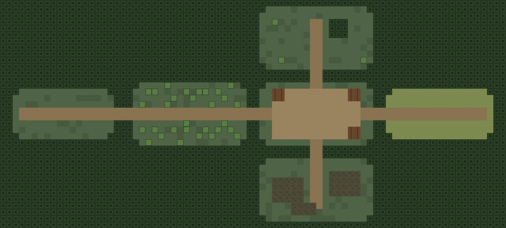
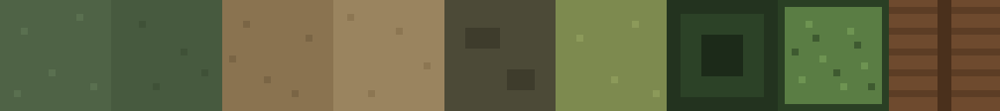

Tout ce qu’il reste à inventer, écrire, dessiner et régler pour finir le jeu. Le code attend tes fiches : c’est toi qui décides de ce qu’il y a dedans.
| Chantier | Pour quand | Fini | ||
|---|---|---|---|---|
| 1 | Le carnet Les quatre fiches de créature et les quatre plantes de l’herbier | Garin : avant le jalon 5 ; les autres quand tu veux | p. 2 | |
| 2 | Les personnages Greg, Lila, Gojo, et le Dieu des monstres | Le Dieu : avant le jalon 6 | p. 12 | |
| 3 | Les dialogues Réécrire les répliques du jalon 4, écrire celles des jalons 5 et 6 | Le boss : avant le jalon 5 | p. 14 | |
| 4 | Le plan de la zone La carte entière, puis un écran par lieu | Quand tu veux | p. 19 | |
| 5 | Les dessins La liste des sprites, des grilles de pixels, la palette | Jalon 6, mais on peut commencer avant | p. 27 | |
| 6 | L’équilibrage Toutes les valeurs à essayer dans l’inspecteur | À chaque partie | p. 31 | |
| 7 | Les tests Les feuilles de verdict des jalons 5 et 6 | À la fin de chaque jalon | p. 34 | |
| 8 | Les décisions Les quatre questions qui restent | La silhouette : avant le jalon 5 | p. 36 |
BOCAL_A_IDEES.md), pas dans le jeu.
Elle n’est pas perdue : elle attend son tour.
Une page commence en langage de laboratoire et finit en langage humain. Chaque analyse réussie écrit une observation ; la clé arrive avec la troisième.
jeu/creatures/gobelin/gobelin.tres, puis remplis l’inspecteur : Avant → Nom De Terrain, Description Avant · Après → Nom Veritable, Description Apres · Observations et clé → Observations (une ligne chacune), Cle · Dessin → Croquis.Une page commence en langage de laboratoire et finit en langage humain. Chaque analyse réussie écrit une observation ; la clé arrive avec la troisième.
jeu/creatures/hure/hure.tres, puis remplis l’inspecteur : Avant → Nom De Terrain, Description Avant · Après → Nom Veritable, Description Apres · Observations et clé → Observations (une ligne chacune), Cle · Dessin → Croquis.Une page commence en langage de laboratoire et finit en langage humain. Chaque analyse réussie écrit une observation ; la clé arrive avec la troisième.
jeu/creatures/rase_mousse/rase_mousse.tres, puis remplis l’inspecteur : Avant → Nom De Terrain, Description Avant · Après → Nom Veritable, Description Apres · Observations et clé → Observations (une ligne chacune), Cle · Dessin → Croquis.Une page commence en langage de laboratoire et finit en langage humain. Chaque analyse réussie écrit une observation ; la clé arrive avec la troisième.
jeu/creatures/garin/garin.tres) ; vous y tapez celle-ci ensemble, comme pour les autres créatures.Une seule analyse par plante, et pas de clé. Avant l’analyse, Gojo ne voit que l’apparence.
jeu/plantes/mousse_de_lune.tres · jeu/plantes/ronce_rouge.tres. Dans l’inspecteur : Plante → Nom Apparent, Couleur Apparente · Avant → Nom De Terrain, Description Avant · Observations · Croquis.Une seule analyse par plante, et pas de clé. Avant l’analyse, Gojo ne voit que l’apparence.
jeu/plantes/capuchon_gris.tres · jeu/plantes/fleur_trompette.tres. Dans l’inspecteur : Plante → Nom Apparent, Couleur Apparente · Avant → Nom De Terrain, Description Avant · Observations · Croquis.Nom : texte, ou sans nom pour une description
(« Le bébé gobelin te regarde sans ciller. »). Tu peux ajouter des lignes, ou en enlever.jeu/zone/bois_des_souches.tscn, nœud BoisDesSouches, rubrique Répliques : le nom de chaque liste est écrit en petit sous le moment. Pour un « nœud » (un gobelin), clique sur ce gobelin dans la scène : ses répliques sont dans son propre inspecteur.| Quand | Aujourd’hui | Ta version |
|---|---|---|
| La clairière | ||
| Gojo ramasse le bâton Repliques Baton | Un bâton ferré, abandonné dans l’herbe. Gojo le ramasse. | |
| Le réflexe, dans le fourré | ||
| Gojo est tombé à 1 PV : les gobelins s’arrêtent Repliques Fin Du Reflexe | Greg : Assez. Lui déjà par terre. Greg : Humain frappe d’abord, regarde après. Toujours pareil. Greg : Toi, viens. Camp pas loin. | |
| L’arrivée au camp | ||
| Greg amène Gojo au camp Repliques Arrivee Camp | Greg : Ici, camp. Assis. Bois l’eau. Gojo reprend des forces. Autour de lui : des familles, des bébés, et beaucoup de malades couchés. | |
| Au camp, avant la quête | ||
| On parle à Greg Repliques Greg Au Camp | Greg : Lila, la vieille, soigne. Mais rien marche. | |
| On parle à Lila Repliques Lila Avant Quete | Lila te tourne le dos. Elle veille ses malades. | |
| On parle à un malade nœuds Malade1, Malade2, Malade3 | Le malade respire mal. Il ne répond pas. | |
| On parle à la gobeline nœud Gobeline | Gobeline : Malades depuis la pluie. Lila essaie tout. Rien marche. | |
| On parle à l’ancien nœud Ancien | Gobelin : Humains brûlent la forêt. Toi, pourquoi pas brûler ? | |
| Le premier bébé nœud Bebe1 | Le bébé gobelin te regarde sans ciller. | |
| Le deuxième bébé nœud Bebe2 | Le bébé gobelin attrape ta manche, puis s’enfuit. | |
| Le premier embusqué, revenu au camp nœud Embusque1 | Gobelin : Toi frappé Greg. Moi pas oublier. Mais Lila dit : pas toucher. | |
| La deuxième embusquée nœud Embusque2 | Gobeline : Humain dans le camp. Jamais vu ça. | |
| Le troisième embusqué nœud Embusque3 | Gobelin : Greg dit toi pas comme les autres. On regarde. | |
| La quête | ||
| Gojo vient d’analyser un malade Repliques Quete | Gojo : De la fièvre, et des taches noires sur la peau. Deux symptômes : il faudra deux remèdes. Lila : Toi, savant ? Alors cherche. Plantes au vieux chêne, en haut. Plantes au creux, en bas. | |
| On reparle à Lila pendant la quête Repliques Lila Pendant Quete | Lila : Fièvre, et taches. Deux plantes. Pas une de plus. | |
| On reparle à Greg pendant la quête Repliques Greg Pendant Quete | Greg : Ma sœur aussi, malade. Toi trouves, toi. | |
| Donner une plante à un malade | ||
| La ronce-rouge (la mauvaise) Repliques Ronce | Le malade tousse. Lila : Non ! Celle-là brûle la gorge. Lila t’arrache la plante des mains et la jette. | |
| La fleur-trompette Repliques Fleur | Lila : Fleur-trompette fait dormir. Pas guérir. Garde. | |
| La mousse-de-lune Repliques Mousse | Lila : Mousse-de-lune. Bonne. La fièvre descend. | |
| Le capuchon gris Repliques Capuchon | Lila : Capuchon gris. Bon. Les taches partent. | |
| Un remède déjà donné Repliques Deja Soigne | Lila : Ça, déjà fait. Il manque l’autre. | |
| Le remède | ||
| Les deux remèdes sont donnés Repliques Gueris | Les malades se relèvent. Lila : Toi pas comme les autres humains. Greg : Toi, ami. Greg le dit à tous. | |
| On reparle à Lila Repliques Lila Apres | Lila : Un homme rôde à la lisière. Avec du feu. Fais attention. | |
| On reparle à Greg Repliques Greg Apres | Greg : Toi peux dormir au camp. Personne te tape. | |
| On parle à un malade guéri Repliques Villageois Gueris | Gobelin : Merci, humain. Moi debout. | |
| Ailleurs | ||
| La sacoche est pleine dans le code (plante.gd) : papa le change | La sacoche est pleine : quatre plantes, pas une de plus. | |
Ces répliques n’existent pas encore : c’est toi qui les inventes. Garin n’est pas un gobelin : lui parle bien, il a un métier, et il veut être payé.
Comme une bande dessinée : une image (320 × 180 pixels dans le jeu) et une ou deux phrases par case. Les idées en gris viennent du pitch du GDD ; garde-les, change l’ordre, ou invente.
80 × 36 tuiles. Chaque case est une tuile de 16 × 16 pixels ; chaque grand rectangle est un écran (ce qu’on voit sans que la caméra bouge). Chaque lieu tient dans un écran. Les cases grises sont les passages d’aujourd’hui.
Faite avec neuf tuiles provisoires, pour que le jeu marche. Tu peux tout repeindre.

La clairière d’arrivéeLe fourréLe campLa lisièreLe vieux chêneLe creux humide
jeu/zone/carte.tscn : deux couches de tuiles, Sol (ce qu’on foule) et Obstacles (ce qui bloque). Choisis une couche, une tuile en bas de l’écran, et peins. Les nouvelles tuiles se dessinent dans jeu/zone/tuiles/ (16 × 16 chacune).Ce qui s’y passe. Gojo tombe ici. On apprend à marcher, rouler, ramasser le bâton. Aucun ennemi.
Ce qui doit y être. Le point d’arrivée de Gojo · le bâton dans l’herbe · la sortie vers le fourré (ronces derrière lui).
Ce qui s’y passe. Greg, seul, de dos. Le jeu invite à l’attaquer ; dès le premier coup, trois gobelins surgissent.
Ce qui doit y être. Greg · trois cachettes pour les embusqués · des buissons · la sortie vers le camp (ronces).
Ce qui s’y passe. Le centre de tout : on y revient sans cesse. Familles, bébés, et beaucoup de malades couchés.
Ce qui doit y être. Lila · Greg · trois malades · une gobeline, un ancien, deux bébés · des huttes · quatre sorties (fourré, chêne, creux, lisière).
Ce qui s’y passe. Garin Corbe arrive avec une torche (jalon 5). C’est l’arène du boss.
Ce qui doit y être. De la place pour se battre, et pour les gobelins en renfort · peut-être la silhouette du Dieu.
Ce qui s’y passe. La hure, et deux plantes qui se ressemblent.
Ce qui doit y être. La hure · des souches pour qu’elle s’y assomme · la mousse-de-lune · la ronce-rouge.
Ce qui s’y passe. Les rase-mousses gardent leurs nids, dans la boue.
Ce qui doit y être. Quatre rase-mousses et leurs nids · le capuchon gris · la fleur-trompette.
Le code n’attend jamais les dessins : aujourd’hui, tout est en rectangles de couleur. Chaque dessin fini remplace son rectangle, sans toucher au code.
| Quoi | Taille | Les images | Jalon | Fait |
|---|---|---|---|---|
| Gojo | 24 × 24 | 4 directions × (repos 2, marche 4, attaque 3, analyse 2), et l’effet lumineux du gant | 6 | |
| Gobelin du camp | 24 × 24 | 4 directions × (repos 2, marche 4, attaque 3) ; couché malade ; un bébé (petit : 8 × 9 aujourd’hui) | 6 | |
| Greg et Lila | 24 × 24 | comme le gobelin, avec le détail qui les distingue | 6 | |
| La hure | 24 × 24 | repos 2, marche 4, préparation de la charge 2, charge 3, étourdie 2, apaisée 1 | 6 | |
| Rase-mousse | 16 × 16 | vol 2 à 4, morsure 2, endormi 1 ; le nid | 6 | |
| Garin Corbe | 24 × 24 | 4 directions × (repos 2, marche 4) ; tir à l’arbalète 3 ; coup de lame 3 ; à terre 1 ; la torche | 5–6 | |
| Le Dieu des monstres | 24 × 48 | une seule image, sa silhouette (s’il apparaît en lisière) | 5 | |
| Les quatre plantes | 16 × 16 | une image chacune ; la mousse-de-lune et la ronce-rouge se ressemblent | 6 | |
| Les objets | 16 × 16 | le bâton dans l’herbe, une souche, les ronces des passages, un piège de Garin | 5–6 | |
| Les tuiles | 16 × 16 | les neuf d’aujourd’hui (herbe, herbe sombre, chemin, terre du camp, boue, herbe sèche, arbre, buisson, hutte), et toutes celles que tu veux | 6 | |
| Les cœurs | 8 × 8 | plein, demi, vide | 6 | |
| Les croquis du carnet | 48 × 36 | un par page : quatre créatures, quatre plantes | 6 | |
| Les images de l’intro | 320 × 180 | une par case de l’intro (voir les dialogues du jalon 6) | 6 |
.png
dans le dossier de la créature, par exemple jeu/creatures/hure/.Une seule palette pour tout le jeu : de 24 à 32 couleurs, choisies avant de dessiner. Ensuite, chaque dessin n’utilise que celles-là. C’est ce qui rend le jeu cohérent, et ça évite de se demander mille fois « quel vert ? ». Colorie chaque case, et écris dessous à quoi sert la couleur.
| Réglage | Aujourd’hui | Essai 1 | Essai 2 | Essai 3 | On garde |
|---|---|---|---|---|---|
| Gojo jeu/gojo/gojo.tscn | |||||
| nœud Gojo, rubrique Marche | |||||
| Vitesse Marche Sa vitesse, en pixels par seconde. À régler en premier, avant tout le reste. | 80 | ||||
| Duree Acceleration Le temps pour démarrer, en secondes. | 0,08 | ||||
| Duree Freinage Le temps pour s’arrêter. | 0,06 | ||||
| nœud Gojo, rubrique Roulade | |||||
| Vitesse Roulade Vitesse pendant la roulade. | 220 | ||||
| Duree Roulade Durée de la roulade. | 0,25 | ||||
| Duree Invincibilite Le début de la roulade, où rien ne touche Gojo. | 0,2 | ||||
| Recharge Roulade Le temps avant de pouvoir rouler à nouveau. | 0,6 | ||||
| nœud Gojo, rubrique Bâton | |||||
| Cadence Attaque Le temps entre deux coups de bâton. | 0,35 | ||||
| Duree Coup Le temps pendant lequel le coup touche. | 0,12 | ||||
| nœud Baton/Hitbox | |||||
| Degats Ce qu’enlève un coup de bâton. | 1 | ||||
| Force Recul Jusqu’où le coup repousse. | 120 | ||||
| nœud Gojo, rubrique Gant | |||||
| Duree Analyse Le temps de contact pour une analyse. Un coup reçu l’interrompt. | 1,0 | ||||
| Vitesse Pendant Analyse Gojo ralentit pendant qu’il analyse. | 40 | ||||
| nœud Gojo, rubrique Vie | |||||
| Pv Max Ses points de vie : 2 par cœur. | 6 | ||||
| nœud Hurtbox | |||||
| Invincibilite Apres Coup Après un coup reçu, le temps où rien ne le touche. | 0,8 | ||||
| La hure jeu/creatures/hure/hure.tscn | |||||
| nœud Hure, rubrique Vie | |||||
| Pv Max « Elle doit faire peur, pas être longue. » | 8 | ||||
| nœud Hure, rubrique Errance | |||||
| Vitesse Errance Quand elle se promène. | 20 | ||||
| Duree Pas Errance Le temps de chaque petit pas. | 1,2 | ||||
| Distance Detection D’où elle repère Gojo, en pixels. | 96 | ||||
| nœud Hure, rubrique Charge | |||||
| Duree Preparation Le temps où elle rougit avant de foncer : le temps pour réagir. | 0,6 | ||||
| Vitesse Charge Sa vitesse quand elle fonce. | 200 | ||||
| Duree Charge Max Au-delà, elle s’arrête même sans rien heurter. | 1,0 | ||||
| Duree Etourdissement Assommée contre une souche : le moment pour l’analyser. | 1,5 | ||||
| Duree Repos Le repos après une charge dans le vide. | 0,8 | ||||
| Freinage La force avec laquelle elle s’arrête. | 600 | ||||
| nœud HitboxCharge | |||||
| Degats Ce qu’enlève une charge. | 2 | ||||
| Force Recul Jusqu’où la charge projette Gojo. | 200 | ||||
| nœud Hurtbox | |||||
| Invincibilite Apres Coup | 0,2 | ||||
| Les rase-mousses jeu/creatures/rase_mousse/rase_mousse.tscn | |||||
| nœud RaseMousse, rubrique Vie | |||||
| Pv Max | 2 | ||||
| nœud RaseMousse, rubrique Nuée | |||||
| Distance Detection D’où ils repèrent Gojo. | 72 | ||||
| Rayon Du Nid Jusqu’où ils s’éloignent de leur nid. | 40 | ||||
| Vitesse Attaque Quand ils foncent sur Gojo. | 120 | ||||
| Vitesse Vol Quand ils volent autour du nid. | 60 | ||||
| Duree Fuite Après une morsure, le temps où ils s’enfuient. | 0,8 | ||||
| Pause Entre Attaques Le temps entre deux attaques. | 1,5 | ||||
| nœud RaseMousse, rubrique Pollen | |||||
| Duree Sommeil Combien de temps le pollen les endort. | 8 | ||||
| Portee Pollen D’où Gojo peut souffler le pollen. | 48 | ||||
| nœud Hitbox | |||||
| Degats Une morsure. | 1 | ||||
| Force Recul | 100 | ||||
| nœud Hurtbox | |||||
| Invincibilite Apres Coup | 0,2 | ||||
| Les gobelins jeu/creatures/gobelin/gobelin.tscn | |||||
| nœud Gobelin | |||||
| Vitesse Quand ils marchent (Greg qui guide Gojo). | 50 | ||||
| Vitesse Attaque Quand ils foncent, pendant le réflexe. | 72 | ||||
| Duree Coup Le temps pendant lequel un coup touche. | 0,2 | ||||
| Recharge Coup Le temps entre deux coups. | 0,6 | ||||
| nœud Hitbox | |||||
| Degats | 1 | ||||
| Force Recul | 160 | ||||
| nœud Hurtbox | |||||
| Invincibilite Apres Coup | 0,3 | ||||
| Le carnet jeu/carnet/carnet.tscn | |||||
| nœud Carnet | |||||
| Analyses Par Page « Le chiffre qui décide du rythme de toute la tranche. » | 3 | ||||
| Analyses Par Plante | 1 | ||||
| La zone jeu/zone/bois_des_souches.tscn | |||||
| nœud BoisDesSouches, rubrique Combat du réflexe | |||||
| Duree Max Reflexe Au-delà, le combat impossible s’arrête quoi qu’il arrive. | 12 | ||||
| Distance Reveil Greg Si Gojo reste aussi près de Greg sans frapper… | 24 | ||||
| Duree Avant Reveil … Greg se retourne au bout de ce temps. | 1,0 | ||||
| nœud BoisDesSouches, rubrique Reprise | |||||
| Duree Avant Reprise Après un K.O., le temps avant de repartir. | 1,5 | ||||
Déjà tranché, pour mémoire : le gobelin s’appelle Greg, la doyenne Lila, et les gobelins du camp ne peuvent pas être frappés en v1 (un système de réputation attend dans le bocal).
Sur la fiche des personnages, p. 13.
Aussi sur la fiche des personnages, p. 13.
docs/game-design-document.md, tableau « Décisions à prendre », colonne Décision.